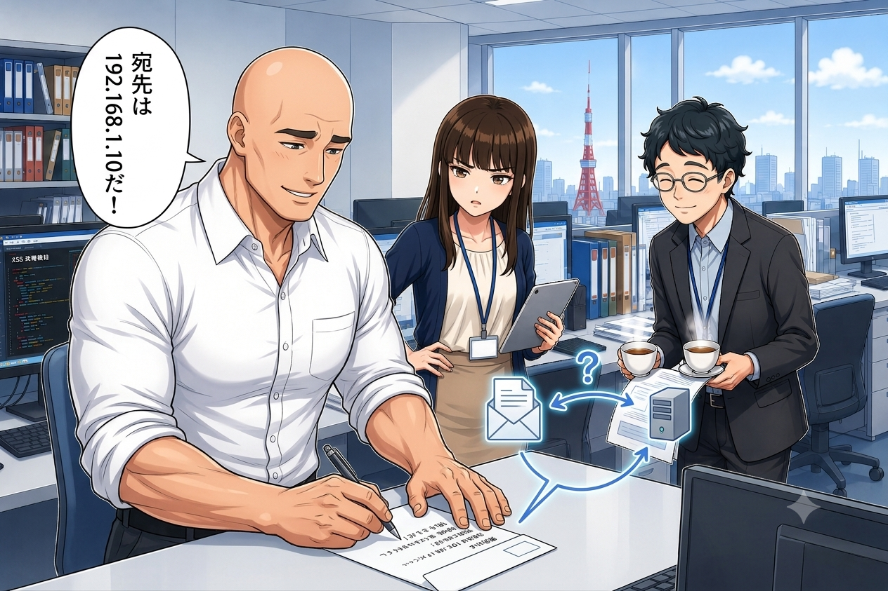
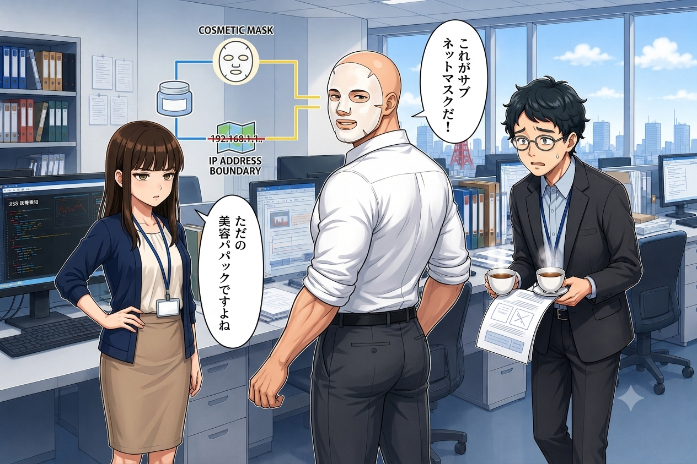
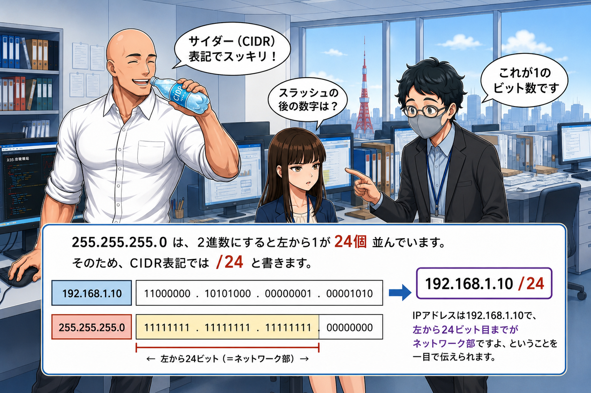
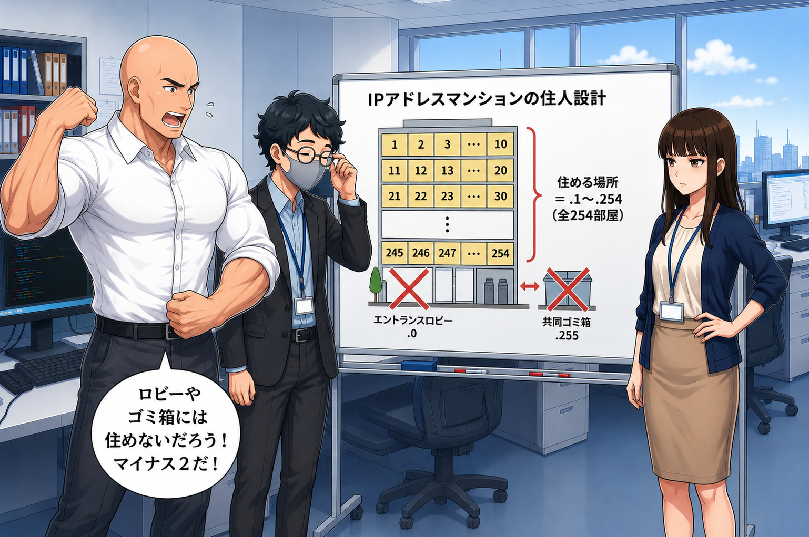

プロローグ：手紙の宛先は「192.168.1.10」？
情シス部での勤務にも少し慣れてきたアオキ（25）。
デスクで作業していると、ミズダイ課長が真剣な表情で、封筒に何かを書き殴っていた。

【ep04_01.png】宛先不明になりそうな手紙を書くミズダイ課長
ミズダイ
「フゥーッ！ よし、アオキくんへの業務連絡レターの宛先が書けたぞ！ 『宛先：192.168.1.10』！ これで完璧に届くはずだ！」
アオキ
「届くわけないでしょう。それ、郵便局員さんが見たらただの謎の数字の羅列ですよ。というか、同じ部屋にいるんだから普通に口で言ってください」
ホシノ
「うふふ。ですが概念としては合っていますね。インターネットの世界で、データを送るための『住所』にあたるのが **IPアドレス** です。」
ホシノ
「現在広く使われている **IPv4** は、全体で32ビット（4バイト）のデータです。そのまま2進数で書くと `11000000101010000000000100001010` と長すぎて人間が読めません。
そこで、8ビット（1バイト）ずつ4つに区切り、それぞれを10進数（0〜255）にして、ドットで繋いで表現するルールになっています。
例：`192.168.1.10`」
アオキ
「なるほど。だから4つの数字が並んでいるんですね。でも、全世界のPCやスマホに、それぞれ違う住所が割り当てられているってことですか？」
ホシノ
「その通りです。住所が重複すると、手紙がどこに届くか分からなくなってしまいますからね（重複すると『IPアドレスの競合』というエラーになります）。」
住所の「市区町村」と「番地」、そして謎の覆面
アオキ
「手紙の住所なら『東京都渋谷区（エリア）』と『〇〇町1-2-3（個別）』に分かれていますよね。IPアドレスにもそういう区別はあるんですか？」
ホシノ
「素晴らしい着眼点です！ まさにIPアドレスも、グループを表す **『ネットワーク部（市区町村）』** と、そのグループ内の個別の端末を表す **『ホスト部（番地）』** の2つに分かれています」
ミズダイ
「そして！ どこからどこまでが市区町村名なのかをコンピュータに示すために被せるのが、この **サブネットマスク（Subnet Mask）** なのだァァッ！！」
そう叫びながらミズダイ課長が振り返ると、顔に真っ白な美容パックのシートマスクを貼り付けていた。

【ep04_02.png】サブネットマスク（物理）を装着したミズダイ課長
アオキ
「いや、それただの美容パック（シートマスク）ですよね。カサカサの肌を保湿してるだけじゃないですか。……ホシノさん、本物のサブネットマスクの解説をお願いします」
ホシノ
「はい、課長のお肌が潤ったところで解説しますね。サブネットマスク（例：`255.255.255.0`）は、IPアドレスに重ね合わせることで境界線を引く役割を持ちます。
2進数で表したとき、**『1』が並んでいる部分がネットワーク部**、**『0』が並んでいる部分がホスト部** になります。
例えば、IPが `192.168.1.10`、マスクが `255.255.255.0` の場合：
・マスクの `255.255.255`（2進数で1が24個並ぶ）＝ ここまでがネットワーク部（市区町村）
・マスクの `0`（2進数で0が8個並ぶ）＝ ここからがホスト部（番地）
つまり、同じ `192.168.1.` というネットワークの中に、`10` 番というホスト（端末）がいる、という意味になります。」
喉を潤す「サイダー（CIDR）」？
アオキ
「でも、いちいち『サブネットマスクは255.255.255.0です』って書くの、数字が多くてめんどくさくないですか？」
ミズダイ
「フハハ！ そこで喉を潤す、この冷え冷えの **サイダー（CIDR）** 表記の出番だッ！ ゴクゴク……プハァーッ！ 炭酸が脳内CPUに染み渡るぞ！」
アオキ
「（本当に炭酸サイダーを飲み始めたよ……）炭酸のサイダーじゃなくて、表記法のCIDRですよね。ホシノさん……」
ホシノ
「はい、綴りは **CIDR**（Classless Inter-Domain Routing）ですね。これは、サブネットマスクの『1のビットの数』を、IPアドレスの末尾に `/` を使ってスッキリ書く方法です。
・`255.255.255.0` は、2進数にすると左から1が **24個** 並んでいます。
・そのため、CIDR表記では **`/24`** と書きます。
つまり、`192.168.1.10 /24` と書くだけで、『IPアドレスは192.168.1.10で、左から24ビット目までがネットワーク部ですよ』ということが一目で伝わるのです。非常にスマートですよね」

【ep04_03.png】CIDR表記（プレフィックス）で境界線をスマートに表す
ホストの定員と、「ロビーとゴミ箱」のルール
アオキ
「なるほど。もし `/24` のネットワークだったら、ホスト部（番地）に使えるのは残り8ビット分ですね。8ビット＝256通りだから、PCは256台繋げられるんですか？」
ホシノ
「惜しいです！ 実は、ホスト部に使えるアドレスの中でも**『最初』と『最後』の2つはPCに割り当ててはいけない**ルールがあります。そのため、実際に繋げられる最大数は **256 - 2 = 254台** になります」
ミズダイ
「ホスト部が全部0（例：`.0`）は『ネットワーク自身』を表す **ネットワークアドレス**！ ホスト部が全部1（例：`.255`）は全員に一斉送信するための **ブロードキャストアドレス**！ 例えるなら、マンションの『エントランスロビー（.0）』と『共同ゴミ箱（.255）』だ！ ロビーやゴミ箱には住めないだろう！ だから入居者はマイナス2しなければならんのだッ！」
アオキ
「ゴミ箱に住むのは嫌すぎますね……。でも、ロビー（ネットワーク全体）とゴミ箱（全員宛て）という例えで、マイナス2の理由がよく分かりました！」

【ep04_04.png】特別な2つのアドレス（住めない場所）のイメージ
午前問題（科目A）にチャレンジ！
ホシノさんがホワイトボードに、IPアドレスとサブネットに関する過去問を書き出した！
【問題1】
CIDR表記が 192.168.1.0/24 であるネットワークにおいて、ホスト（PCやプリンタなど）に割り当てることができるIPアドレスの最大数はいくつか。
ア：254
イ：255
ウ：256
エ：512
アオキ
「これはさっき課長が言っていた『マイナス2』のルールですね！
`/24` ということは、ホスト部は残り8ビット（32 - 24 = 8ビット）。
8ビットで表せるアドレスの総数は 2の8乗で 256通り。
そこから、ネットワークアドレス（ホスト部がすべて0）とブロードキャストアドレス（ホスト部がすべて1）の2つを引く必要があるから、
256 - 2 = 254台。
正解は **『アの254』** です！」
ホシノ
「素晴らしい！ 大正解です。この『マイナス2』を忘れて『256』を選んでしまうミスが非常に多いので、アオキさんはバッチリですね」
【問題2】
IPアドレスが 192.168.10.35、サブネットマスクが 255.255.255.224 の端末がある。この端末と同じサブネットに属するIPアドレスはどれか。
ア：192.168.10.15
イ：192.168.10.30
ウ：192.168.10.50
エ：192.168.10.65
ミズダイ
「おおお！ これはサブネットの境界線を見極める本格的な計算問題！ アオキ、お肌をサブネットマスクで保湿した私を納得させる解答を見せてみよ！」
アオキ
「パックはもう剥がしてください……。ええと、この問題は2進数にして考えます。
まず、IPアドレスの最後のアドレスは『35』。2進数にすると `00100011` です。
次に、サブネットマスクの最後の値は『224』。2進数にすると `11100000` です（128 + 64 + 32 = 224）。
この2つを重ね合わせ（AND演算）します。
マスクが `111` になっている左端の3ビット `001` がネットワーク部。
残りの5ビットがホスト部です。
同じネットワークに属するということは、ネットワーク部（最初の3ビット）が `001` で共通している必要があります。
ホスト部が全部0の `00100000`（10進数で32）から、全部1の `00111111`（10進数で63）までの範囲が、同じサブネットになります。
選択肢の中で、最後の数字が 32 から 63 の間にあるのは……『50』の **『ウ』** だけです！」
ホシノ
「大正解です！ 完璧なロジックですね。サブネットマスクの末尾が `224` の場合、ネットワークが32刻み（256通り ÷ 8パターン）に分割されるため、32〜63のグループに属する端末を探す、というアプローチでも素早く解くことができますよ」
ミズダイ
「見事だアオキ！ 私の顔面マスク（シートマスク）に匹敵する、完璧なサブネットマスクの使いこなしぶり！ よし、今日の研修完了の記念に、炭酸サイダー（CIDR）で乾杯といこう！」
アオキ
「乾杯はいいですけど、サイダーはいただきます（ごくごく）。……ふぅ、ネットワークの住所も、ルールがわかればパズルのように解けますね！」
IPアドレスとサブネットマスクの役割、そしてアドレス設計のルールを学んだアオキ。
ネットワークエンジニアへの第一歩を踏み出し、情シス部での挑戦は次のステージへ！
（第4話：IPアドレスとサブネットマスク 編 完）